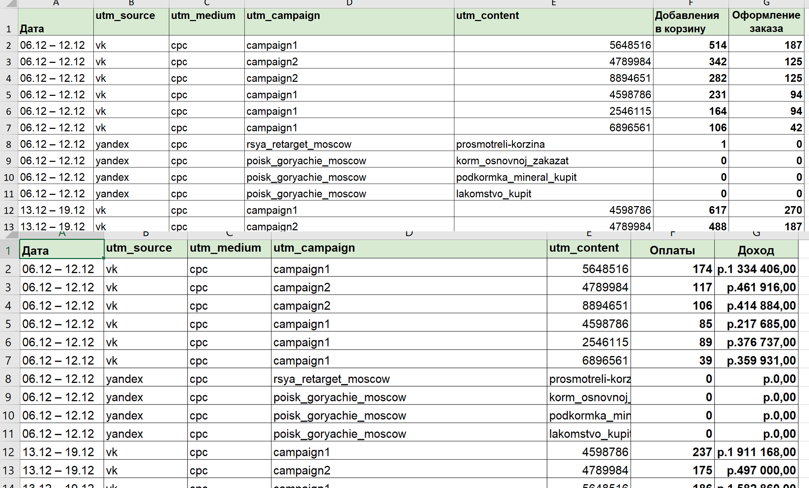
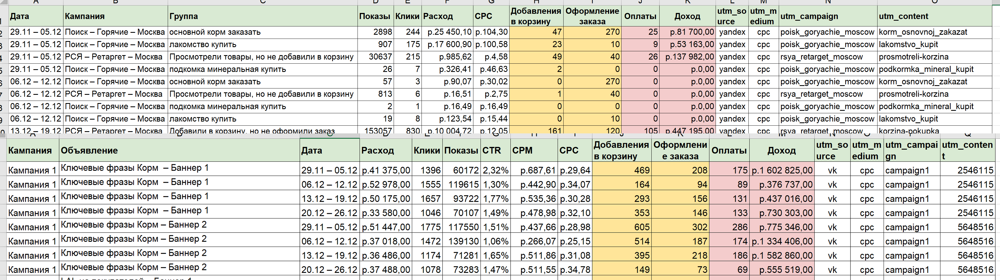
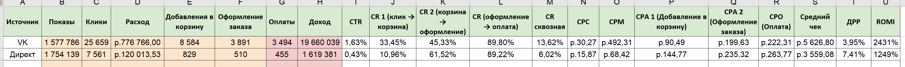
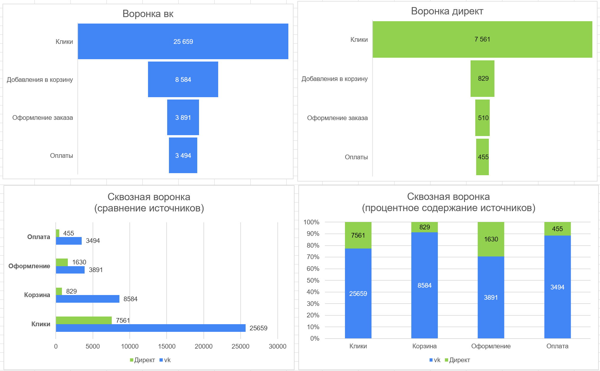
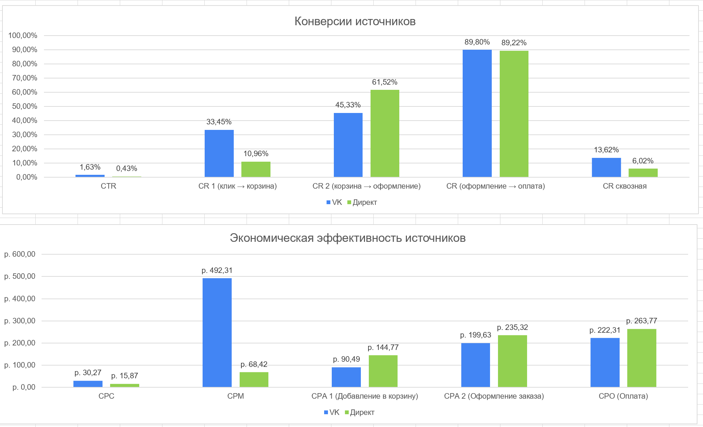
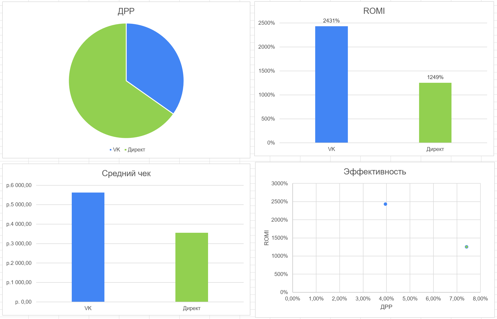

Сквозная аналитика рекламных кампаний
🎯 Цель
Построить систему сквозной аналитики для отслеживания эффективности рекламных кампаний: от клика до покупки.
Исходные данные
Данные взяты из учебного датасета.


Итоговая таблица

Визуализация



🔍 Общие выводы
- ВК даёт максимальный трафик и конверсии – высокий CTR и сквозная конверсия показывают качественную аудиторию и эффективность креативов.
- Директ уступает по CTR и сквозной конверсии, но сохраняет потенциал за счёт относительно дешёвого CPC и стабильного CR на финальных этапах.
- Общий ROMI у ВК в 2 раза выше, ДРР ниже – значит, бюджет окупается эффективнее.
📈 Рекомендации
- ВК: масштабировать бюджеты, тестировать новые сегменты ЦА, поддерживать качество креативов для удержания CTR и ROMI.
- Директ: оптимизировать ключевые слова и объявления для роста CTR; протестировать новые посадочные страницы или оферы.
- Использовать сквозную аналитику для контроля всех этапов воронки и минимизации потерь. Включить проверку гипотез: разные УТП, креативы, целевые аудитории.
🛠 Использованные инструменты
• Директ • vk • Google Analytics • Метрика • Excel • CRM
← Вернуться на главную